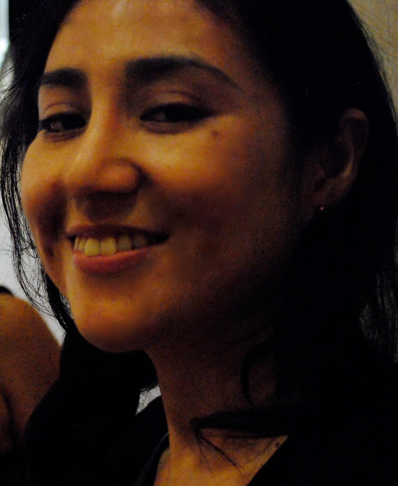
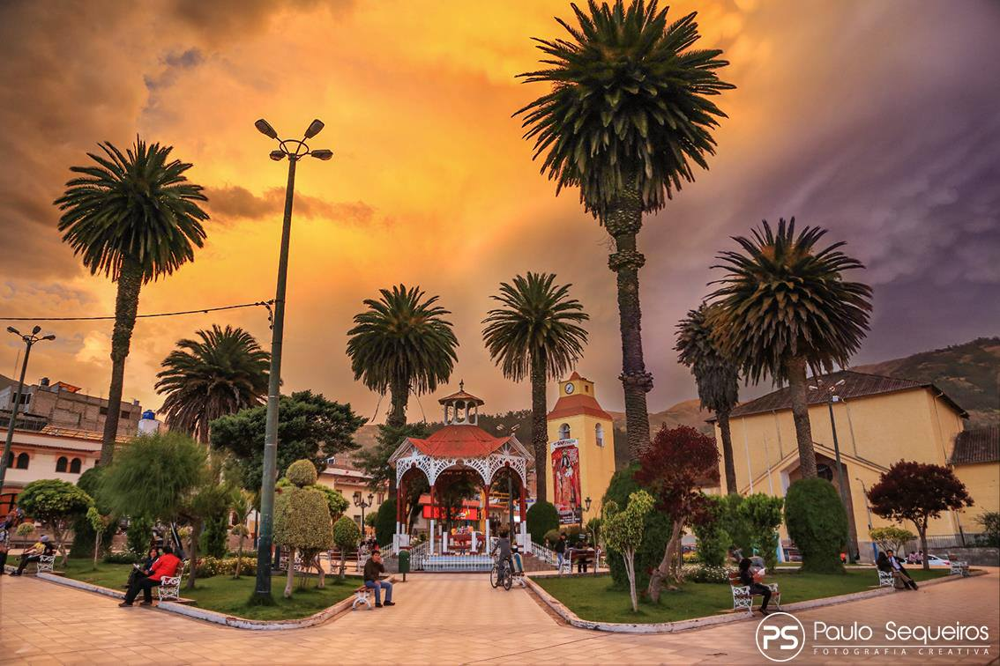

Katherin
Déjate pulir
Detrás de cada prueba y dificultad hay un propósito que te acerca a la meta
About Me

Mi nombre es Katherin, soy de la ciudad de Abancay y aunque no radique ahi me encantaria volver y pasar el resto de mi vida viviendo ahi. Me encanta todo sobre ella: su clima, su gente, y sobretodo sus increibles secretos lugares. Entre lo que mas disfruto de la vida es escuchar musica, investigar, leer y ver peliculas sobre todo las que se inspiran en historias de la vida real :D Es por eso que me encanta Netflix, puedo pasar dias enteros enganchada con una serie y verla hasta el ultimo capitulo. Hace mucho visite Machu Picchu y fue una experiencia divertida y relajante a la vez, es por eso que espero regresar de nuevo :)
My Favourite Things
Here are a few things I really love

